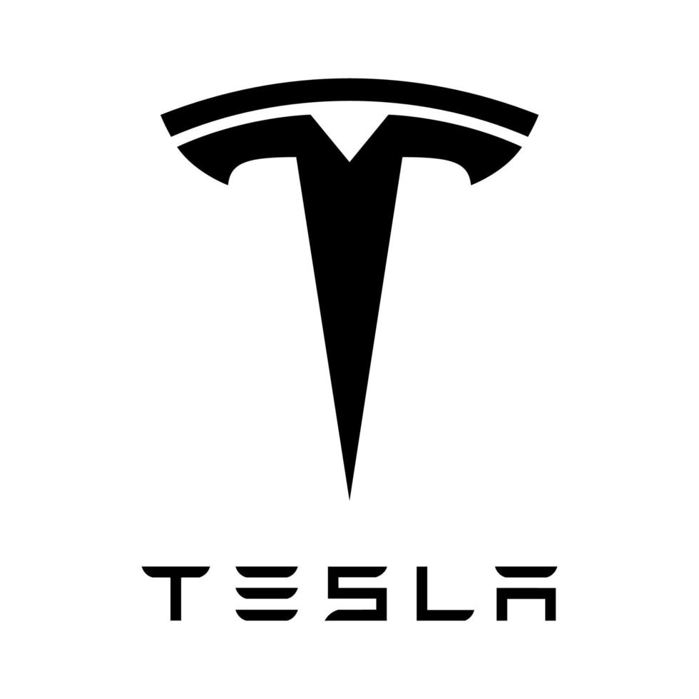
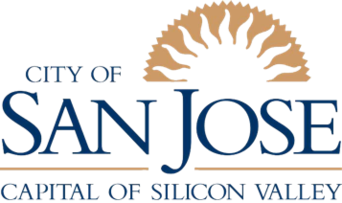
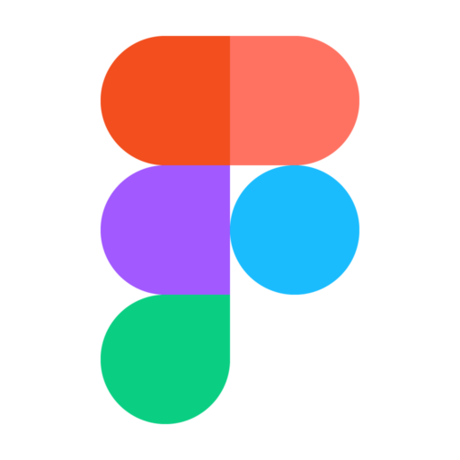

UX design — serious craft,room to play
I design product narratives, interfaces, and research-backed flows—often with a calmer baseline and occasional typographic scale as the expressive layer. Work spans product UX, systems thinking, and shipping on the web.
View My WorkFeatured UX Projects

Trusted by Leading Organizations


